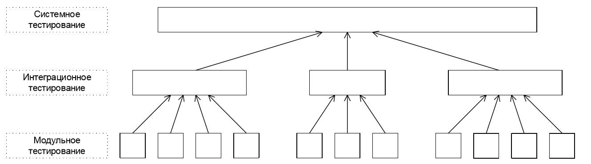

Виды и методы тестирования
Краткое и наглядное руководство по основным уровням, видам и подходам к тестированию ПО.
Что такое тестирование?
Тестирование — это процесс проверки качества программного обеспечения с целью выявления дефектов и несоответствий требованиям. Виды тестирования помогают охватить разные аспекты работы продукта: функциональность, производительность, безопасность, удобство и др.
- Проверка работы функций и сценариев
- Оценка производительности и устойчивости
- Проверка безопасности и защиты данных
- Тестирование совместимости и доступности
Пример тест-кейса
Название: Проверка авторизации с валидными данными
Шаги: Ввести корректный логин и пароль, нажать "Войти"
Ожидаемый результат: Пользователь успешно авторизован и попадает на главную страницу
Шаги: Ввести корректный логин и пароль, нажать "Войти"
Ожидаемый результат: Пользователь успешно авторизован и попадает на главную страницу
Подходы и техники тестирования
- White-box, black-box, grey-box
- Эквивалентное разбиение, граничные значения, попарное тестирование
- Тестирование по сценариям, exploratory testing
Инструменты для тестирования
- TestRail, Qase — управление тест-кейсами
- Jira — отслеживание багов
- Postman — тестирование API
- Selenium, Cypress — автоматизация тестов
Советы по выбору видов тестирования
- Ориентируйтесь на риски и критичность функций
- Используйте разные виды тестирования для комплексной проверки
- Не забывайте о нефункциональных аспектах (производительность, безопасность)
Глоссарий терминов
- Smoke-тестирование — базовая проверка работоспособности
- Регрессия — проверка, что изменения не сломали старое
- Тест-кейс — сценарий проверки
- Дефект — найденная ошибка
Полезные ресурсы

Уровни тестирования
- Компонентное
- Интеграционное
- Системное
- Приёмочное
Нет единой классификации, но выделяют уровни тестирования (по детализации: компонентное, интеграционное, системное, приёмочное) и уровни функционального тестирования (по важности функций: smoke, critical path, extended).

Описание уровней
Компонентное тестирование — проверка отдельных компонентов/модулей ПО.
Интеграционное тестирование — проверка взаимодействия между модулями и компонентами.
Системное тестирование — проверка всей системы на соответствие требованиям.
Приёмочное тестирование — проверка системы с точки зрения пользователя/заказчика.

Виды тестирования по целям и задачам
Функциональное — проверка функциональности системы согласно требованиям.
Нефункциональное — проверка атрибутов, не связанных с функциональностью: производительность, удобство, безопасность и др.
Инсталляционное — проверка корректности установки и запуска приложения.
Конфигурационное — проверка работы ПО при разных конфигурациях и окружениях.
Совместимость — кросс-платформенное, кросс-браузерное, мобильное тестирование.
GUI тестирование — проверка соответствия интерфейса спецификациям.
Usability — проверка удобства использования продукта.
Интернационализация и локализация — проверка готовности к разным языкам и культурам.
Безопасность — оценка защищённости программного продукта.
Доступность — пригодность для людей с ограниченными возможностями.
Производительность — оценка поведения системы под нагрузкой.
Нагрузочное и стресс-тестирование — работа при высоких и экстремальных нагрузках.
Тестирование изменений
Тестирование нового функционала — проверка новых возможностей продукта.
Регрессионное тестирование — проверка, что изменения не сломали существующую функциональность.
По фазе разработки
Тестирование разработки — проводится во время разработки, чтобы выявить максимум дефектов до релиза.
Приёмочное тестирование — проверка соответствия ожиданиям пользователя/заказчика.
Тестирование сопровождения — проверка изменений и миграций в уже работающей системе.
По приоритету выполнения
Дымовое тестирование — проверка самой главной функциональности, без которой продукт не имеет смысла.
Критический путь — проверка функциональности, используемой в повседневной деятельности.
Расширенное тестирование — проверка всей заявленной функциональности, включая малозначимые функции.
По принципу работы с приложением
Позитивное тестирование — работа приложения при корректных действиях пользователя.
Негативное тестирование — работа приложения при ошибочных действиях и вводе некорректных данных.
По запуску кода
Статическое тестирование — проверка без запуска кода на исполнение.
Динамическое тестирование — проверка с запуском кода на исполнение.
По доступу к коду
Белый ящик — тестировщик имеет доступ к внутренней структуре и коду приложения.
Чёрный ящик — тестировщик не имеет доступа к коду или не использует его.
Серый ящик — комбинация методов белого и чёрного ящика.
По формализации
Тест-кейсы — тестирование по заранее подготовленным тест-кейсам.
Чек-листы — тестирование по чек-листам.
Исследовательское и хаотическое — тестирование без формальных сценариев, на основе опыта и интуиции.
Когда проводить смоук и регрессионное тестирование?
Смоук тестирование — быстрая проверка критических функций после сборки или обновления.
Регрессионное тестирование — проверка, что новые изменения не нарушили существующую функциональность.